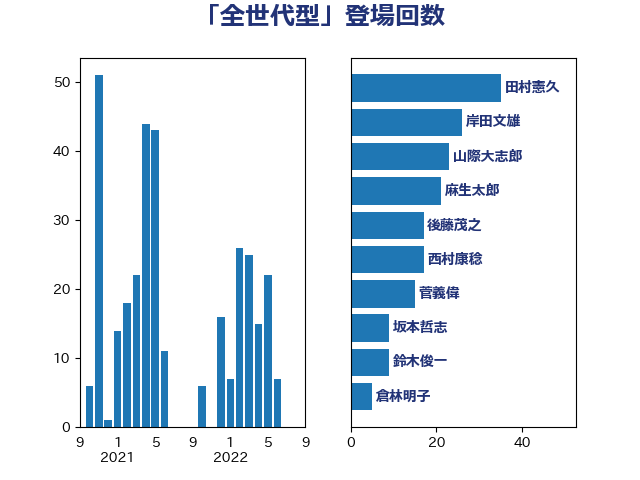

単語「全世代型」

| 田村憲久 | 自由民主党 | 35 回 |
| 岸田文雄 | 自由民主党 | 26 回 |
| 山際大志郎 | 自由民主党 | 23 回 |
| 麻生太郎 | 自由民主党 | 21 回 |
| 後藤茂之 | 自由民主党 | 17 回 |
| 西村康稔 | 自由民主党 | 17 回 |
| 菅義偉 | 自由民主党 | 15 回 |
| 坂本哲志 | 自由民主党 | 9 回 |
| 鈴木俊一 | 自由民主党 | 9 回 |
| 倉林明子 | 日本共産党 | 5 回 |
| 古屋範子 | 公明党 | 5 回 |
| 田村智子 | 日本共産党 | 5 回 |
| 浅野哲 | 国民民主党 | 4 回 |
| 田村まみ | 国民民主党 | 4 回 |
| 自見はなこ | 自由民主党 | 4 回 |
| 伊藤渉 | 公明党 | 3 回 |
| 佐藤啓 | 自由民主党 | 3 回 |
| 和田義明 | 自由民主党 | 3 回 |
| 宗清皇一 | 自由民主党 | 3 回 |
| 山口那津男 | 公明党 | 3 回 |
| 岡本三成 | 公明党 | 3 回 |
| 梅村聡 | 日本維新の会 | 3 回 |
| 田中健 | 国民民主党 | 3 回 |
| 田島麻衣子 | 立憲民主党 | 3 回 |
| 矢倉克夫 | 公明党 | 3 回 |
| 石井啓一 | 公明党 | 3 回 |
| 福田昭夫 | 立憲民主党 | 3 回 |
| 船橋利実 | 自由民主党 | 3 回 |
| 高村正大 | 自由民主党 | 3 回 |
| 佐々木さやか | 公明党 | 2 回 |
| 塩田博昭 | 公明党 | 2 回 |
| 大西健介 | 立憲民主党 | 2 回 |
| 木原誠二 | 自由民主党 | 2 回 |
| 本田顕子 | 自由民主党 | 2 回 |
| 東徹 | 日本維新の会 | 2 回 |
| 武井俊輔 | 自由民主党 | 2 回 |
| 片山大介 | 日本維新の会 | 2 回 |
| 赤澤亮正 | 自由民主党 | 2 回 |
| 野田聖子 | 自由民主党 | 2 回 |
| 一谷勇一郎 | 日本維新の会 | 1 回 |
| 三原じゅん子 | 自由民主党 | 1 回 |
| 上野賢一郎 | 自由民主党 | 1 回 |
| 伊佐進一 | 公明党 | 1 回 |
| 大岡敏孝 | 自由民主党 | 1 回 |
| 大島敦 | 立憲民主党 | 1 回 |
| 小池晃 | 日本共産党 | 1 回 |
| 山田勝彦 | 立憲民主党 | 1 回 |
| 川田龍平 | 立憲民主党 | 1 回 |
| 柴田巧 | 日本維新の会 | 1 回 |
| 森屋宏 | 自由民主党 | 1 回 |
| 甘利明 | 自由民主党 | 1 回 |
| 石田昌宏 | 自由民主党 | 1 回 |
| 磯崎仁彦 | 自由民主党 | 1 回 |
| 礒崎哲史 | 国民民主党 | 1 回 |
| 稲富修二 | 立憲民主党 | 1 回 |
| 笠井亮 | 日本共産党 | 1 回 |
| 羽生田俊 | 自由民主党 | 1 回 |
| 藤原崇 | 自由民主党 | 1 回 |
| 藤田文武 | 日本維新の会 | 1 回 |
| 西岡秀子 | 国民民主党 | 1 回 |
| 金村龍那 | 日本維新の会 | 1 回 |
| 長妻昭 | 立憲民主党 | 1 回 |
| 音喜多駿 | 日本維新の会 | 1 回 |
| 高市早苗 | 自由民主党 | 1 回 |
| 高木啓 | 自由民主党 | 1 回 |